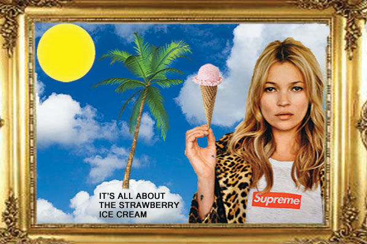

Home Pixels Vector Motion Print Contact

I wanted to recreate the iconic photo of Kate Moss wearing a Supreme tshirt. I love clouds, and wanted to incorporate a Summer theme in this project. Since Kate Moss was holding a cigarette, I decided to remove that and replace it with a Strawberry ice cream cone. After seeing these two photos together, I decided to add a palm tree, sun, and the wording, "It's all about the Strawberry Ice Cream."